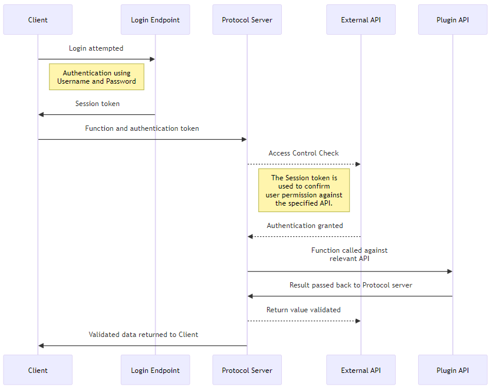

External Services
External web services in Moodle allow the platform to interact with external systems, providing a bridge for integrating Moodle with third-party applications such as mobile apps, external platforms, or custom systems. Moodle uses a standardized way to define, expose, and secure web services to ensure safe communication between systems.
Developing an external web service in Moodle involves several steps, including defining the functions to be exposed, creating the necessary security mechanisms, and managing user permissions. The Web Service framework and the External API work closely together providing a number of Endpoints, and self-describing classes to support a wide range of uses.
Moodle uses these web services internally for:
- AJAX interactions in the Moodle Web Interface; and
- The official Moodle Mobile App.
The following example shows a typical authentication and protocol workflow.

The External Service API has two categories of documentation:
- this documentation details how to write a web service and use the External API; and
- API documentation for a live Moodle site, which can be found under Site administration > Server > Web services > API Documentation .
Web Service Protocols
Moodle supports multiple web service protocols, which determine how external systems can communicate with Moodle. Common protocols include:
- REST (Representational State Transfer): A simple, lightweight protocol that uses HTTP requests (GET, POST, etc.).
- SOAP (Simple Object Access Protocol): A more complex, XML-based protocol.
- XML-RPC (Remote Procedure Call): Uses XML to encode calls and HTTP as the transport mechanism.
- AMF (Action Message Format): A binary protocol primarily used for communication with Flash applications.
Moodle comes with built-in support for these protocols, and developers can configure which ones to use.
Defining Web Service Functions
A web service function is a PHP function that handles the logic of your web service. You can expose any PHP function in Moodle as a web service function, but it must be carefully structured to ensure security and proper behavior.
Before they can be used, all functions must be declared to Moodle, and their inputs and outputs must be defined.
- Functions are declared by noting them in the
db/services.phpfile for a plugin. - Functions are defined within their own class located within the
\component\externalnamespace of a component.
Note that there is a strict naming convention for external service functions.
Function implementation classes consist of one class containing a number of functions, some of which are mandatory.
During a Moodle installation or upgrade, the service and function declarations are parsed by a service discovery process and stored within the database. An administrative UI may be used to change some configuration details of these declarations.
Service declarations
Each component wishing to create an external service function must declare that the function exists by describing
it in the db/services.php file for that component.
This information is stored internally within Moodle, and collected as part of the service discovery during installation and upgrade. The function name is arbitrary, but must follow the naming convention. This helps ensure that it is globally unique.
$functions = [
// The name of your web service function, as discussed above.
'local_myplugin_create_groups' => [
// The name of the namespaced class that the function is located in.
'classname' => 'local_groupmanager\external\create_groups',
// A brief, human-readable, description of the web service function.
'description' => 'Creates new groups.',
// Options include read, and write.
'type' => 'write',
// Whether the service is available for use in AJAX calls from the web.
'ajax' => true,
// An optional list of services where the function will be included.
'services' => [
// A standard Moodle install includes one default service:
// - MOODLE_OFFICIAL_MOBILE_SERVICE.
// Specifying this service means that your function will be available for
// use in the Moodle Mobile App.
MOODLE_OFFICIAL_MOBILE_SERVICE,
],
// A comma-separated list of capabilities used by the function.
// This is advisory only and used to indicate to the administrator
// configuring a custom service definition.
'capabilities' => 'moodle/course:creategroups,moodle/course:managegroups',
// The following parameters are also available, but are no longer recommended.
// The name of the external function name.
// If not specified, this will default to 'execute'.
'methodname' => 'execute',
// The file containing the class/external function.
// Do not use if using namespaced auto-loading classes.
'classpath' => 'local/groupmanager/externallib.php',
),
);
Function Definitions
An External function definition is the class, and collection of functions, used to define:
- any parameters that the function expects to take, including any types
- what the function will return, including any types
- whether the function has been deprecated, or not
It also includes the code that will actually be executed by the function.
The function definition should be located within the external namespace of a component. For a component named local_groupmanager located in local/groupmanager which is responsible for creating groups on request, you may have:
- a Web service function named: local_groupmanager_create_groups
- defined in a class named local_groupmanager\external\create_groups
- which is located local/groupmanager/classes/external/create_groups.php
A service definition:
- must extend the \core_external\external_api class
- must declare an execute_parameters function to describe the expected parameters of the function
- must declare an execute function which is called with the functions and performs the expected actions
- must declare an execute_returns function to describe the values returned by the function
- may declare an execute_is_deprecated function to declare a function as deprecated
Writing plugins supporting Multiple Moodle versions The External API subsystem was restructured in Moodle 4.2 and moved from classes within a manually-required file, to autoloaded and namespaced classes.
If you are developing a plugin whose codebase is used or tested in multiple Moodle versions, including older versions of Moodle, then you:
- must require_once the lib/externallib.php file
- must extend the external_api class instead of \core_external\external_api
This will allow your plugin to continue working without deprecation notices or failures.
Please note that deprecation notices will be added to this pathway from Moodle 4.6 onwards.
// local/groupmanager/classes/external/create_groups.php
<?php
namespace local_groupmanager\external;
use external_function_parameters;
use external_multiple_structure;
use external_single_structure;
use external_value;
class create_groups extends \core_external\external_api {
public static function execute_parameters(): external_function_parameters {
return new external_function_parameters([
'groups' => new external_multiple_structure(
new external_single_structure([
'courseid' => new external_value(PARAM_INT, 'The course to create the group for'),
'idnumber' => new external_value(
PARAM_RAW,
'An arbitrary ID code number perhaps from the institution',
VALUE_DEFAULT,
null
),
'name' => new external_value(
PARAM_RAW,
'The name of the group'
),
'description' => new external_value(
PARAM_TEXT,
'A description',
VALUE_OPTIONAL
),
]),
'A list of groups to create'
),
]);
}
public static function execute(array $groups): array {
// Validate all of the parameters.
[
'groups' => $groups,
] = self::validate_parameters(self::execute_parameters(), [
'groups' => $groups,
]);
// Perform security checks, for example:
$coursecontext = \context_course::instance($courseid);
self::validate_context($coursecontext);
require_capability('moodle/course:creategroups', $coursecontext);
// Create the group using existing Moodle APIs.
$createdgroups = \local_groupmanager\util::create_groups($groups);
// Return a value as described in the returns function.
return [
'groups' => $createdgroups,
];
}
public static function execute_returns(): external_single_structure {
return new external_single_structure([
'groups' => new external_multiple_structure([
'id' => new external_value(PARAM_INT, 'Id of the created user'),
'name' => new external_value(PARAM_RAW, 'The name of the group'),
])
]);
}
}
Security Considerations
Web services often expose sensitive data, so it’s critical to enforce strict security measures.
- User Authentication: Ensure that only authorized users can access your web services.
- Capability Checks: Use Moodle’s capabilities system to control access. For example, only users with the capability
moodle/course:viewcan retrieve course details. - Parameter Validation: Always validate and sanitize the input parameters using the
external_function_parametersclass. - Return Value Sanitization: Ensure that the data returned is safe and free from XSS vulnerabilities.
Before operating on any data in an external function, you must ensure that the user:
- has access to context that the data is located in
- has permission to perform the relevant action
Validating function parameters
Before working with any data provided by a user you must validate the parameters against the definitions you have defined.
To do so you should call the validate_parameters() function, passing in the reference to
your execute_parameters() function, and the complete list of parameters for the function.
The function will return the validated and cleaned parameters.
The validate_parameters() function is defined on the \core_external\external_api class,
and can be called as follows:
// local/groupmanager/classes/external/create_groups.php
public static function execute(array $groups): array {
[
'groups' => $groups,
] = self::validate_parameters(self::execute_parameters(), [
'groups' => $groups,
]);
// ...
}
Validating access to the Moodle context
Whenever fetching or updating any data within Moodle using an External function definition, you must validate the context that the data exists within.
To do so you should call the validate_context() function, passing the most specific context for the data.
For example, if you are working with data belonging to a specific activity, you should use the activity context. If you are working with data belonging to a course, you should use the course context.
If your function operates on multiple contexts (like a list of courses), you must validate each context right before generating any response data related to that context.
The validate_context() function is defined on the \core_external\external_api class,
and can be called as follows:
// local/groupmanager/classes/external/create_groups.php
public static function execute(array $groups): array {
// ...
foreach ($groups as $group) {
$coursecontext = \context_course::instance($group['courseid']);
self::validate_context($coursecontext);
// ...
}
}
The validate_context() function will also configure the correct theme, language, and filters required to render content for the current user.
You should not:
- use the require_login function from an external function - this function is reserved for php scripts returning a web page.
- call $PAGE->set_context() manually - this will generate warning notices.
The validate_context() function is the only correct way to write external functions.
Ensuring that a user has the appropriate rights
Once you have confirmed that the provided data is of the correct type, and configured Moodle for the specific context, you should also ensure that all capabilities are checked correctly.
You can use the standard capability functions, including:
- has_capability() - to check that a user has a single capability
- has_any_capability() - to check that a user has any capability in a set
- has_all_capability() - to check that a user has all capabilities in a set
- require_capability() - to require a single capability
- require_all_capabilities() - to require that a user has all capabilities in a set
Managing Access Control
Each web service function can have specific access controls that determine who can call it. Access is controlled via tokens and capabilities.
- Tokens: Users or systems must have a valid token to call a web service. Admins can issue these tokens through Site administration > Server > Web services > Manage tokens.
- Capabilities: Each function can define required capabilities in
db/services.php, ensuring that users have the correct roles to access the web service.
Authentication and Tokens
Moodle uses tokens for authenticating users when they access web services. Tokens are generated for individual users or system accounts and can be issued in two ways:
- Manually by administrators: Through the admin interface.
- Automatically: Using Moodle’s authentication mechanisms (e.g., OAuth2).
Example: Creating a Token Manually
- Go to Site administration > Server > Web services > Manage tokens.
- Choose the user for whom the token will be created.
- Assign the web service functions that this token allows access to.
Service Configuration in the Moodle Admin Interface
After defining your web service functions, you can configure them via the Moodle admin interface:
- Enable Web Services: Ensure web services are enabled in Site administration > Advanced features.
- Configure Protocols: Enable the desired web service protocols under Site administration > Plugins > Web services > Manage protocols.
- Create a Service: In Site administration > Server > Web services > External services, you can create and manage services, which are groups of related web service functions.
- Assign Functions to the Service: Add the functions defined in
db/services.phpto the service, so they are accessible externally.
File handling
Moodle provides two ways to fetch and upload files:
- A set of web service functions; and
- A pair of dedicated endpoints.
Web service functions
You can use the following functions to upload, and fetch, file content:
core_files_get_files(); andcore_files_upload().
When using these functions, the file content is base64-encoded.
Note: Many devices do not have enough memory to encode and decode requests containing large files. As such we recommend using the dedicated endpoints instead.
Dedicated endpoints
Moodle provides two dedicated endpoints which can be used, alongside the authentication token, to upload and fetch content. These are:
- to upload a file:
/webservice/upload.php; and - to fetch a file:
/webservice/pluginfile.php.
File upload
The recommended way to upload file content from an external service is by issue a POST request to the /webservice/upload.php endpoint,
passing in a valid web service token for authentication.
Upon successful upload, any files passed will be saved in the user's draft file area.
The endpoint takes two optional arguments:
- An
itemidto upload the files to, defaulting to0. If none is specified then a new id is generated for the current user's draft file area - A
filepathto store the file in, defaulting to /.
The endpoint will return a JSON-encoded summary of the uploaded file, including the itemid that it was stored in.
It is typical that the itemid parameter will be used when the files are uploaded singularly in separate HTTP calls
and the files are required to be in the same draft file area.
The client retrieves the itemid from the first uploaded file and uses it in subsequent uploads.
This allows multiple files to be uploaded to the same draft file area.
On every successful upload, the file/s information are returned in JSON format. If an error occurs, an error message will be sent back in JSON format too.
Example
To upload a file, users.csv, you could use curl as follows:
$ curl -X POST -F "file_1=@users.csv" https://SITENAME/webservice/upload.php?token=TOKEN \
| jq
[
{
"component": "user",
"contextid": 567,
"userid": "123",
"filearea": "draft",
"filename": "users.csv",
"filepath": "/",
"itemid": 880413555,
"license": "allrightsreserved",
"author": "User User",
"source": "O:8:\"stdClass\":1:{s:6:\"source\";s:13:\"users.csv\";}"
}
]
The returned JSON response includes the key parts of the file record, including the itemid.
Once all the files are uploaded, you can call a webserivce function to process the files from the user drafts area,
passing in the itemid of the draft area containing the list of files for the request.
The service can identify the uploads and manipulate them as necessary.
An example of a webservice that accepts files is: mod_assign_save_submission.
To accept file uploads, the service must allow "files download" (Administration > Plugins > Web services > Manage services > Edit service > Advanced button)
File download
We serve the files through /webservice/pluginfile.php. This script requires a web service token for authentication.
To support file downloads, the service must allow "files download".
The /webservice/pluginfile.php endpoint has the exact same structure as /pluginfile.php and /tokenpluginfile.php.
We don't serve the files through /pluginfile.php for web service clients because it requires the user's login session to work,
however it is possible to use the /tokenpluginfile.php endpoint with an appropriate token.
Returning files in Web Services
Since Moodle 3.2, you can return a complete file area list via Web Services using the static get_area_files method, defined in external_util.
$forum->introfiles = external_util::get_area_files($context->id, 'mod_forum', 'intro', false, false);
You can also use the external_files structure definition in combination with the method to return the most common file fields
required by WS clients.
public static function execute_returns(): external_multiple_structure {
return new external_multiple_structure(
new external_single_structure([
'id' => new external_value(PARAM_INT, 'Forum id'),
// ...
'introfiles' => new external_files('Files in the introduction text', VALUE_OPTIONAL),
// ...
])
);
}
Writing a new service
This documentation covers the creation of a new external service for use in a web service of a fictional local plugin, local_groupmanager.
Functional specification
The local_groupmanager plugin has a need to create groups within a course and would like to do so using its own web service.
When defining a new service definition, Moodle requires that the name of the definition be in the form:
[frankenstyle_component]_[methodname]
The naming convention further dictates that the methodname component be in the form:
[methodname] - The name of the method in the form of [verb]_[noun]
[verb] - Usually one of get, create, delete, update
A similar verb that well describes the action may also be used
[noun] - The object being modified
Usually in Plural form
Per the Moodle naming convention for web services the name of the function should be: local_groupmanager_create_groups
Inputs
The local_groupmanager_create_groups external service definition will take a list of groups as its only parameters.
Outputs
The service will return a list of the created groups, including the id element of those groups.
Exceptions and failures
If any group creation fails, the function will throw an exception, and no groups will be created.
Technical specification
- the core function the external function will call:
groups_create_group()from /group/lib.php. - the parameter types: a list of object. This object are groups, with
id/name/courseid. - the returned value types: a list of objects (groups) with their id.
- the user capabilities to check:
moodle/course:managegroups
Declare the web service function
An external function must be declared before it can be used in your plugin. Function declarations
should be placed in the db/services.php file of your plugin.
For example in our fictitious plugin this would be located in local/groupmanager/db/services.php.
$functions = [
// The name of your web service function, as discussed above.
'local_groupmanager_create_groups' => [
// The name of the namespaced class that the function is located in.
'classname' => 'local_groupmanager\external\create_groups',
// A brief, human-readable, description of the web service function.
'description' => 'Creates new groups.',
// Options include read, and write.
'type' => 'write',
// Whether the service is available for use in AJAX calls from the web.
'ajax' => true,
// An optional list of services where the function will be included.
'services' => [
// A standard Moodle install includes one default service:
// - MOODLE_OFFICIAL_MOBILE_SERVICE.
// Specifying this service means that your function will be available for
// use in the Moodle Mobile App.
MOODLE_OFFICIAL_MOBILE_SERVICE,
]
],
];
A number of advanced options are also available, as described below:
$functions = [
// The name of your web service function, as discussed above.
'local_groupmanager_create_groups' => [
// A comma-separated list of capabilities used by the function.
// This is advisory only and used to indicate to the administrator configuring a custom service definition.
'capabilities' => 'moodle/course:creategroups,moodle/course:managegroups',
// The following parameters are also available, but are no longer recommended.
// The name of the external function name.
// If not specified, this will default to 'execute'.
// 'methodname' => 'execute',
// The file containing the class/external function.
// Do not use if using namespaced auto-loading classes.
// 'classpath' => 'local/groupmanager/externallib.php',
),
);
Write the external function descriptions
Every web service function is mapped to an external function. External function are described in the External functions API. Each external function is written with two other functions describing the parameters and the return values. These description functions are used by web service servers to:
- validate the web service function parameters
- validate the web service function returned values
- build WSDL files or other protocol documents
These two description functions are located in the class declared in local/groupmanager/db/services.php.
Thus for the web service function local_groupmanager_create_groups(), we should write a class named create_groups in the
local_groupmanager\external namespace.
This will be located in the file local/groupmanager/classes/external/create_groups.php. The class will contain:
- execute(...)
- execute_parameters()
- execute_return()
Defining parameters
<?php
namespace local_groupmanager\external;
use external_function_parameters;
use external_multiple_structure;
use external_single_structure;
use external_value;
class create_groups extends \core_external\external_api {
/**
* Returns description of method parameters
* @return external_function_parameters
*/
public static function execute_parameters() {
return new external_function_parameters([
'groups' => new external_multiple_structure(
new external_single_structure([
'courseid' => new external_value(PARAM_INT, 'id of course'),
'name' => new external_value(
PARAM_TEXT,
'multilang compatible name, course unique'
),
'description' => new external_value(
PARAM_RAW,
'group description text'
),
'enrolmentkey' => new external_value(
PARAM_RAW,
'group enrol secret phrase'
),
])
)
]);
}
}
A web service function without parameters will have a parameter description function like that:
/**
* Returns description of method parameters
* @return external_function_parameters
*/
public static function execute_parameters(): external_function_parameters {
return new external_function_parameters([
// If this function had any parameters, they would be described here.
// This example has no parameters, so the array is empty.
]);
}
A parameter can be described as:
- a list => external_multiple_structure
- an object => external_single_structure
- a primary type => external_value
Our create_groups() function expects one parameter named groups, so we will first write:
/**
* Returns description of method parameters
* @return external_function_parameters
*/
public static function execute_parameters(): external_function_parameters {
return new external_function_parameters([
'groups' => ...
]);
}
This groups parameter is a list of group. So we will write :
'groups' => new external_multiple_structure(
...
)
An external_multiple_structure object (list) can be constructed with:
- external_multiple_structure (list)
- external_single_structure (object)
- external_value (primary type).
For our function it will be a external_single_structure:
new external_single_structure([
'courseid' => ...,
'name' => ...,
'description' => ...,
'enrolmentkey' => ...,
])
Thus we obtain :
'groups' => new external_multiple_structure(
new external_single_structure([
'courseid' => ...,
'name' => ...,
'description' => ...,
'enrolmentkey' => ...,
])
)
- courseid is an integer
- name is a string (text only, not tag)
- description is a string (can be anything)
- enrolmentkey is also a string (can be anything)
We add them to the description :
'groups' => new external_multiple_structure(
new external_single_structure([
// The second argument is a human readable description text.
// This text is displayed in the automatically generated documentation.
'courseid' => new external_value(PARAM_INT, 'id of course'),
'name' => new external_value(PARAM_TEXT, 'multilang compatible name, course unique'),
'description' => new external_value(PARAM_RAW, 'group description text'),
'enrolmentkey' => new external_value(PARAM_RAW, 'group enrol secret phrase'),
])
)
execute_returns()
It's similar to execute_parameters(), but instead of describing the parameters, it describes the return values.
public static function execute_returns() {
return new external_multiple_structure(
new external_single_structure([
'id' => new external_value(PARAM_INT, 'group record id'),
'courseid' => new external_value(PARAM_INT, 'id of course'),
'name' => new external_value(PARAM_TEXT, 'multilang compatible name, course unique'),
'description' => new external_value(PARAM_RAW, 'group description text'),
'enrolmentkey' => new external_value(PARAM_RAW, 'group enrol secret phrase'),
])
);
}
Required, Optional or Default value
A value can be VALUE_REQUIRED, VALUE_OPTIONAL, or VALUE_DEFAULT. If not mentioned, a value is VALUE_REQUIRED by default.
'yearofstudy' => new external_value(PARAM_INT, 'year of study', VALUE_DEFAULT, 1979),
- VALUE_REQUIRED - if the value is not supplied => the server throws an error message
- VALUE_OPTIONAL - if the value is not supplied => the value is ignored. Note that VALUE_OPTIONAL can't be used in top level parameters, it must be used only within array/objects key definition. If you need top level Optional parameters you should use VALUE_DEFAULT instead.
- VALUE_DEFAULT - if the value is not supplied => the default value is used
Because some web service protocols are strict about the number and types of arguments - it is not possible to specify an optional parameter as one of the top-most parameters for a function.
// An example of incorrect behaviour
public static function get_biscuit_parameters() {
return new external_function_parameters([
'chocolatechips' => new external_value(
PARAM_BOOL,
'if biscuit contains chocolate chips',
VALUE_REQUIRED
),
'glutenfree' => new external_value(
type: PARAM_BOOL,
required: VALUE_DEFAULT,
default: false,
allownull: false
),
// ERROR! top level optional parameter!!!
'icingsugar' => new external_value(
PARAM_BOOL,
'if biscuit has icing sugar on top',
VALUE_OPTIONAL
),
]);
}
// An example of correct behaviour
public static function get_biscuit_parameters() {
return new external_function_parameters([
'ifeellike' => new external_single_structure([
'chocolatechips' => new external_value(
PARAM_BOOL,
'if biscuit contains chocolate chips',
VALUE_REQUIRED
),
'glutenfree' => new external_value(
type: PARAM_BOOL,
required: VALUE_DEFAULT,
default: false,
allownull: false
),
// ALL GOOD!! We have nested the params in an external_single_structure.
'icingsugar' => new external_value(
PARAM_BOOL,
'if biscuit has icing sugar on top',
VALUE_OPTIONAL
),
]),
]);
}
Implement the external function
We declared our web service function and we defined the external function parameters and return values. We will now implement the external function:
/**
* Create groups
* @param array $groups array of group description arrays (with keys groupname and courseid)
* @return array of newly created groups
*/
public static function execute($groups) {
global $CFG, $DB;
require_once("$CFG->dirroot/group/lib.php");
$params = self::validate_parameters(self::execute_parameters(), ['groups' => $groups]);
$transaction = $DB->start_delegated_transaction(); //If an exception is thrown in the below code, all DB queries in this code will be rollback.
$groups = array();
foreach ($params['groups'] as $group) {
$group = (object)$group;
if (trim($group->name) == '') {
throw new invalid_parameter_exception('Invalid group name');
}
if ($DB->get_record('groups', ['courseid' => $group->courseid, 'name' => $group->name])) {
throw new invalid_parameter_exception('Group with the same name already exists in the course');
}
// now security checks
$context = get_context_instance(CONTEXT_COURSE, $group->courseid);
self::validate_context($context);
require_capability('moodle/course:managegroups', $context);
// finally create the group
$group->id = groups_create_group($group, false);
$groups[] = (array) $group;
}
$transaction->allow_commit();
return $groups;
}
Parameter validation
$params = self::validate_parameters(self::execute_parameters(), [
'groups' => $groups,
]);
This validate_parameters function validates the external function parameters against the description. It will return an exception if some required parameters are missing, if parameters are not well-formed, and check the parameters validity. It is essential that you do this call to avoid potential hack.
Important: the parameters of the external function and their declaration in the description must be the same order. In this example we have only one parameter named $groups, so we don't need to worry about the order.
Context and Capability checks
// Perform security checks.
$context = context_course::instance($group->courseid);
self::validate_context($context);
require_capability('moodle/course:managegroups', $context);
Note: validate_context() is required in all external functions before operating on any data belonging to a context.
This function does sanity and security checks on the context that was passed to the external function -
and sets up the global $PAGE and $OUTPUT for rendering return values. Do NOT use require_login(),
or $PAGE->set_context() in an external function.
Exceptions
You can throw exceptions. These are automatically handled by Moodle web service servers.
// Note: It is good practice to add detailled information in $debuginfo,
// and only send back a generic exception message when Moodle DEBUG mode < NORMAL.
// It's what we do here throwing the invalid_parameter_exception($debug) exception
throw new invalid_parameter_exception('Group with the same name already exists in the course');
Correct return values
The return values will be validated by the Moodle web service servers:
- return values contain some values not described => these values will be skipped.
- return values miss some required values (VALUE_REQUIRED) => the server will return an error.
- return values types don't match the description (int != PARAM_ALPHA) => the server will return an error Note: cast all your returned objects into arrays.
Bump the plugin version
Edit your local/groupmanager/version.php and increase the plugin version.
This should trigger a Moodle upgrade and the new web service should be available in the administration
(Administration > Plugins > Web Services > Manage services)
Deprecation
External functions deprecation process is slightly different from the standard deprecation.
If you are interested in deprecating any of your external functions you should also (apart from the applicable points detailed
in the standard deprecation docs) create a FUNCTIONNAME_is_deprecated() method in your external function class.
Return true if the external function is deprecated. This is an example:
/**
* Mark the function as deprecated.
* @return bool
*/
public static function execute_is_deprecated() {
return true;
}
Service creation
Moodle comes with two built-in services that your functions can be attached to. In rare situations, you may need to create a create a custom service declaration. The recommended way of creating a new service declaration is by placing it into the db/services.php file as a new service declaration. Moodle Administrators can also manually create a service declaration using the web interface. This is an advanced feature and, in most cases, you will not need to use this feature. Whilst writing a service declaration is optional, if you do not create a service declaration, then the Moodle administrator will have to create one manually through the Web UI. If you define a web service here, then the administrator cannot add or remove any function from it.
Declaring a custom service declaration
Service declarations should be placed in the db/services.php file of your plugin (after function declaration),
for example local/groupmanager/db/services.php.
$services = [
// The name of the service.
// This does not need to include the component name.
'myintegration' => [
// A list of external functions available in this service.
'functions' => [
'local_groupmanager_create_groups',
],
// If set, the external service user will need this capability to access
// any function of this service.
// For example: 'local_groupmanager/integration:access'
'requiredcapability' => 'local_groupmanager/integration:access',
// If enabled, the Moodle administrator must link a user to this service from the Web UI.
'restrictedusers' => 0,
// Whether the service is enabled by default or not.
'enabled' => 1,
// This field os optional, but requried if the `restrictedusers` value is
// set, so as to allow configuration via the Web UI.
'shortname' => '',
// Whether to allow file downloads.
'downloadfiles' => 0,
// Whether to allow file uploads.
'uploadfiles' => 0,
]
];
It is not possible for an administrator to add/remove any function from a pre-built service.
Unit Testing
Unit tests are the best way of checking the behaviour of your external services and can help you to:
- discover use cases you didn't think about
- understand the feelings and the needs of the web service client developer
- end up with a function usable by everybody, not only by your own client
- reach integration way faster as you joined a proof of validity
- make the QA process a breeze
Writing unit tests for an external service function is no different to writing unit tests for any other part of Moodle, which is documented in under PHPUnit.
How to write an external function PHPUnit test
You should create one unit test testcase for each external service file, and it should be named after the file that it tests.
For example, if you have written a service function in [componentfolder]/classes/external/get_fruit.php, you should write a unit test in [componentfolder]/tests/external/get_fruit_test.php.
//mod/kitchen/tests/external/get_fruit_test.php
<?php
// This file is part of Moodle - http://moodle.org/
//
// Moodle is free software: you can redistribute it and/or modify
// it under the terms of the GNU General Public License as published by
// the Free Software Foundation, either version 3 of the License, or
// (at your option) any later version.
//
// Moodle is distributed in the hope that it will be useful,
// but WITHOUT ANY WARRANTY; without even the implied warranty of
// MERCHANTABILITY or FITNESS FOR A PARTICULAR PURPOSE. See the
// GNU General Public License for more details.
//
// You should have received a copy of the GNU General Public License
// along with Moodle. If not, see <http://www.gnu.org/licenses/>.
/**
* Unit tests for the get_fruit function of the kitchen.
*
* @package mod_kitchen
* @category external
* @copyright 20XX Your Name
* @license http://www.gnu.org/copyleft/gpl.html GNU GPL v3 or later
*/
namespace mod_kitchen\external;
defined('MOODLE_INTERNAL') || die();
global $CFG;
require_once($CFG->dirroot . '/webservice/tests/helpers.php');
class get_fruit_test extends externallib_advanced_testcase {
/**
* Test the execute function when capabilities are present.
*
* @covers \mod_fruit\external\get_fruit::execute
*/
public function test_capabilities(): void {
$this->resetAfterTest(true);
$course = $this->getDataGenerator()->create_course();
$cm = $this->getDataGenerator()->create_module('mod_kitchen', [
'course' => $course->id,
]);
// Set the required capabilities by the external function
$contextid = context_module::instance($cm->cmid)->id;
$roleid = $this->assignUserCapability('moodle/CAPABILITYNAME', $contextid);
// Call the external service function.
$returnvalue = get_fruit::execute([
'course' => $course->id,
'cmid' => $cm->id,
]);
// We need to execute the return values cleaning process to simulate
// the web service server.
$returnvalue = \core_external\external_api::clean_returnvalue(
get_fruit::execute_returns(),
$returnvalue
);
// Assert that there was a response.
// The actual response is tested in other tests.
$this->assertNotNull($returnvalue);
}
/**
* Test the execute function when capabilities are missing.
*
* @covers \mod_fruit\external\get_fruit::execute
*/
public function test_capabilities_missing(): void {
global $USER;
$this->resetAfterTest(true);
$course = $this->getDataGenerator()->create_course();
$cm = $this->getDataGenerator()->create_module('mod_kitchen', [
'course' => $course->id,
]);
// Set the required capabilities by the external function
$contextid = context_module::instance($cm->cmid)->id;
$this->unassignUserCapability('moodle/CAPABILITYNAME', $contextid, $roleid);
$params = [PARAM1, PARAM2, ...];
// Call without required capability
$this->expectException(required_capability_exception::class);
get_fruit::execute([
'course' => $course->id,
'cmid' => $cm->id,
]);
}
}
Testing
To test web services:
- Use Postman or similar tools to make HTTP requests to the Moodle web services endpoint.
// Example: of a webservice call with parameters userid and message curl --location 'https://mysite.localhost/webservice/rest/server.php?wstoken=XXXXXXXXXXX&moodlewsrestformat=json&wsfunction=myplugin_service_name' \ --form 'userid="10"' \ --form 'message="test message"' - Verify token validity and function calls.
- Use Moodle’s web service test client (available in Site administration > Server > Web services > Manage services) to manually test the functions.